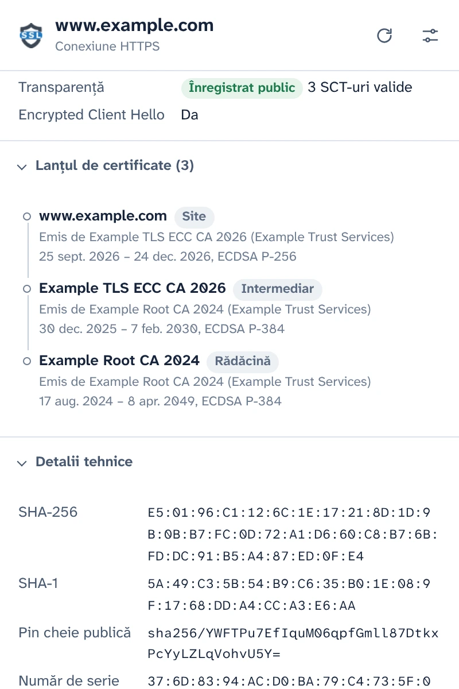
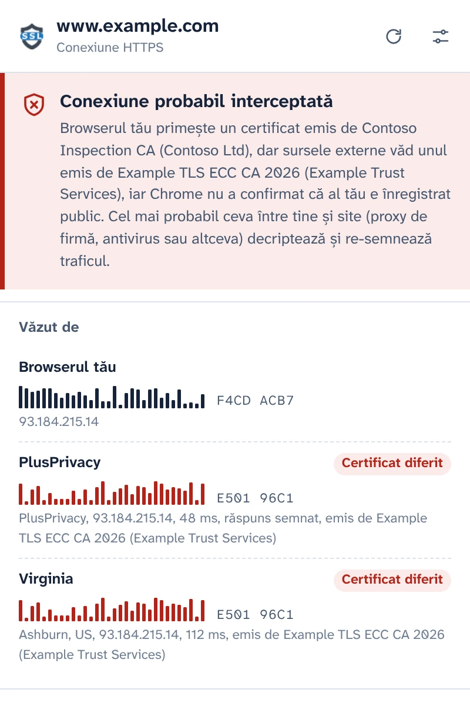
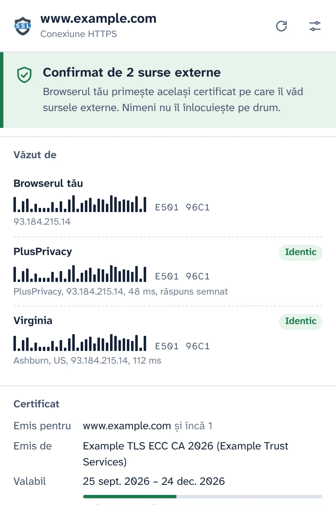
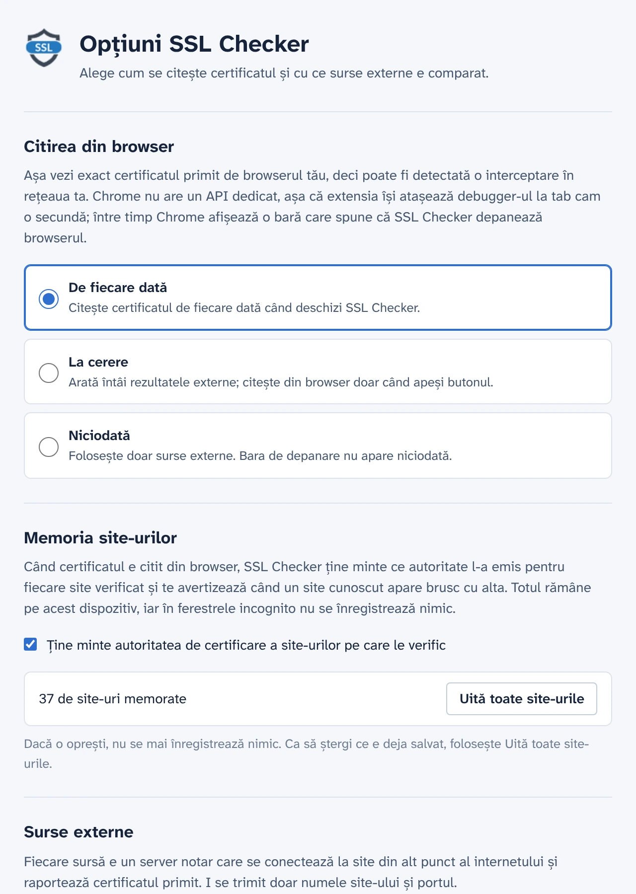

Vezi certificatul primit cu adevărat de browserul tău
SSL Checker citește certificatul site-ului din tabul tău direct din Chrome și îl compară cu ce văd notari independenți din alte puncte ale internetului. Dacă diferă, ceva dintre tine și site îl înlocuiește.
Gratuit și open source. Fără cont, fără analytics.
Confirmat de 2 surse externeConexiune probabil interceptată
Browserul tău primește același certificat pe care îl văd sursele externe. Nimeni nu îl înlocuiește pe drum.Browserul tău primește un certificat emis de Contoso Inspection CA, dar sursele externe văd unul emis de Example TLS ECC CA 2026.
- Browserul tău E501 96C1F4CD ACB7
- PlusPrivacy IdenticCertificat diferit E501 96C1
- Virginia IdenticCertificat diferit E501 96C1
Toate detaliile conexiunii
Ce a primit Chrome pentru acest tab, citit din browser, nu descărcat din nou de pe un server.
- Numele acoperite, emitentul, valabilitatea și zilele rămase, nivelul de validare (DV, OV, EV)
- Versiunea TLS, schimbul de chei, inclusiv hibrizii post-cuantici, cifrul și Encrypted Client Hello
- Statusul Certificate Transparency și marcajele de timp semnate (SCT)
- Lanțul complet, amprentele și toate extensiile. Copiezi PEM-ul sau descarci lanțul.

Prinde interceptarea HTTPS
Proxy-urile de firmă, scanarea HTTPS a antivirusurilor și atacatorii din rețelele Wi-Fi publice lucrează la fel: îți decriptează traficul și îi dau browserului un certificat al lor. Pagina arată normal, iar lacătul rămâne.
SSL Checker întreabă notarul PlusPrivacy și orice notar adaugi tu ce certificat le arată același site. Ei se conectează din alte puncte ale internetului, pe lângă ce se află în rețeaua ta, iar amprentele sunt comparate:
- Același certificat peste tot: confirmat.
- Al tău e diferit și neînregistrat public: probabil interceptat. SSL Checker numește autoritatea care a emis înlocuitorul și recunoaște produsele de inspecție cunoscute.
- Sursele nu sunt de acord între ele: raportat ca atare, cu explicația fiecărui caz posibil.

Răspunsuri pe care nimeni de pe drum nu le poate falsifica
Ceva care îți interceptează traficul ar putea încerca să răspundă și în numele unui notar. Nu reușește: notarul PlusPrivacy semnează fiecare răspuns cu Ed25519, iar SSL Checker verifică semnătura, un număr aleator trimis cu fiecare întrebare și site-ul despre care a întrebat. Un răspuns falsificat, repetat sau redirecționat e refuzat, iar popup-ul spune că ceva l-a schimbat.
Instalează-ți propriul notar
Notarul e open source: un mic serviciu Node.js pentru Docker, protejat împotriva avalanșelor de cereri și a cererilor către rețele private. Instalează-l pe orice server, adaugă-i adresa și cheia în Opțiuni, iar răspunsurile lui sunt verificate la fel.

Tu decizi când rulează debugger-ul
Chrome nu are un API pentru extensii care să dea certificatul unei pagini încărcate, așa că SSL Checker atașează debugger-ul Chrome la tab cam o secundă, cât îl citește, iar între timp Chrome își afișează bara de depanare. În Opțiuni alegi când se întâmplă asta:
- De fiecare dată când deschizi popup-ul
- La cerere, cu un clic în popup
- Niciodată: sunt întrebați doar notarii
Ține minte site-urile pe care le verifici
SSL Checker ține minte ce autoritate de certificare folosește fiecare site și te avertizează când un site cunoscut apare brusc cu alta, de exemplu într-o rețea Wi-Fi nouă. Memoria rămâne pe dispozitivul tău, nu e folosită niciodată în ferestrele incognito și poate fi oprită sau ștearsă din Opțiuni.

Gândit pentru confidențialitate
- Nu citește și nu trimite nimic până nu îți dai acordul în popup.
- Doar numele site-ului și portul pleacă de pe dispozitivul tău, în corpul unei cereri HTTPS către notarii pe care îi folosești.
- Notarul PlusPrivacy nu păstrează nicio evidență a site-urilor verificate. Îl poți opri sau poți întreba doar notari instalați de tine.
- Fără analytics, fără urmărire, fără cont. Memoria site-urilor nu părăsește dispozitivul tău.
- Nici acest site nu are analytics și nu încarcă nimic de pe alte servere.
POST /v1/cert
Content-Type: application/json
{
"host": "www.example.com",
"port": 443,
"nonce": "Xq3MpTb0vR9kLs2eWn5yZA"
}